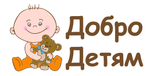

Почему именно мы?
The Ray-Ban® Wayfarer® is simply the most recognizable style in sunglasses. The distinct shape is paired with the traditional Ray-Ban signature logo on the sculpted temples. After its initial design in 1952, the Ray-Ban Wayfarer quickly endeared itself to Hollywood filmmakers, celebrities, musicians and artists,solidifying its iconic status for years to come.
Хочу дарить
Хочу получить